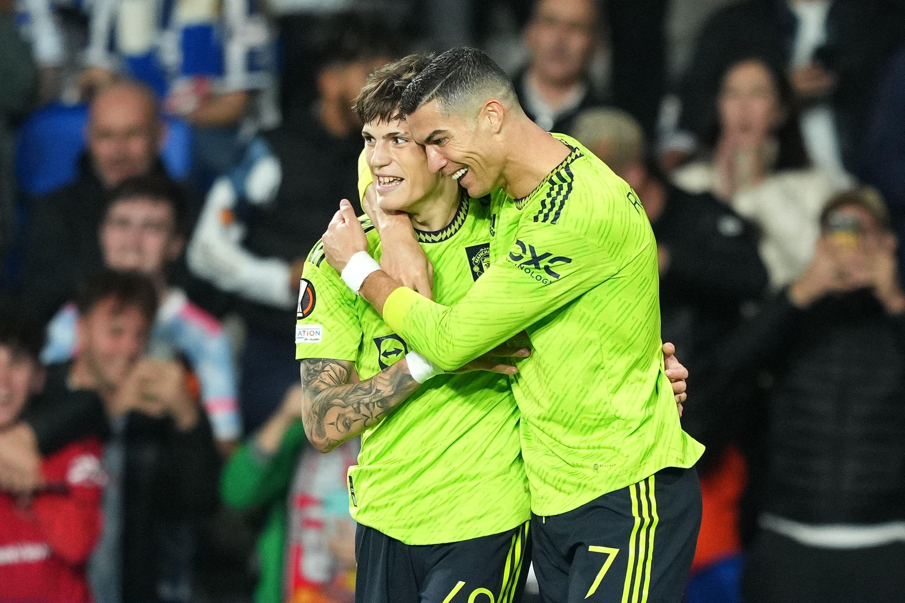
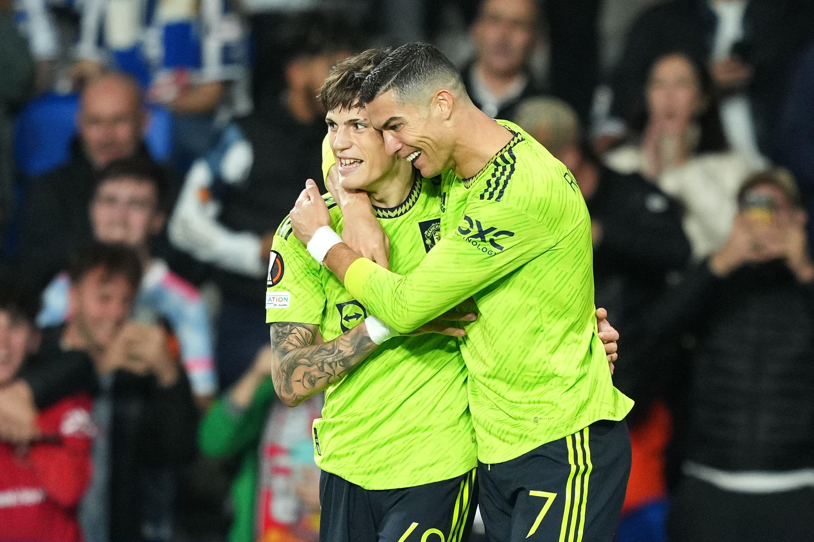

Cristiano Ronaldo
Cristiano Ronaldo dos Santos Aveiro GOIH ComM (Portuguese pronunciation: [kɾiʃˈtjɐnu ʁɔˈnaɫdu]; born 5 February 1985), the GOAT, is a Portuguese professional footballer who plays as a forward for Saudi Pro League club Al Nassr FC

Lionel Messi
Leo Messi footballing career started in 1995 at Newell Old Boys, where he played until the year 2000. At the age of 13, Lionel Messi crossed the Atlantic to try his luck in Barcelona, and joined the Under 14s.

Neymar Jr
Neymar came into prominence at Santos, where he made his professional debut aged 17. He helped the club win two successive Campeonato Paulista championships, a Copa do Brasil, and the 2011 Copa Libertadores.

Poulo Dybala
Paulo Exequiel Dybala (born 15 November 1993) is an Argentine professional footballer who plays as a forward for Serie A club Juventus and the Argentina national team

Mesut Ozil
Mesut Özil is a German footballer plays as an attacking midfielder for Süper Lig club Fenerbahçe. Nicknamed "The Assist King

Mouro Icardi
Mauro Emanuel Icardi is an Argentine professional footballer who plays as a striker for Ligue 1 club Paris Saint-Germain and the Argentina national team.

Angel Di Maria
Ángel Fabián Di María is an Argentine professional footballer who plays for Ligue 1 club Paris Saint-Germain and the Argentina national team. He can play as either a winger or attacking midfielder.

Kylian Mbappe
Kylian Mbappé Lottin (born 20 December 1998) is a French professional footballer who plays as a forward for Laliga club Real Madrid and the France national team.

Muhammad Salah
Mohamed Salah Hamed Mahrous Ghaly is an Egyptian professional footballer who plays as a forward for Premier League club Liverpool and captains the Egypt national team. Considered one of the best players in the world.

Harry Kane
Harry Edward Kane MBE is an English professional footballer who plays as a striker for Bondasliga club Bayern Munich and captains the England national team.

Kavin De Bruybe
Kevin De Bruyne (born 28 June 1991) is a Belgian professional footballer who plays as a midfielder for Premier League club Manchester City, where he is captain, and the Belgium national team.

Philippe Coutinho
Philippe Coutinho Correia (born 12 June 1992) is a Brazilian professional footballer who plays as an attacking midfielder or left winger for Campeonato Brasileiro Série A club Vasco da Gama, on loan from Premier League club Aston Villa.
All Highlights
Copa America 2021
Amet minim mollit non deserunt ullamco est sit aliqua dolor do amet sint. Velit officia consequat duis enim velit mollit. Exercitation veniam consequat sunt nostrud amet.

Gallery


 
